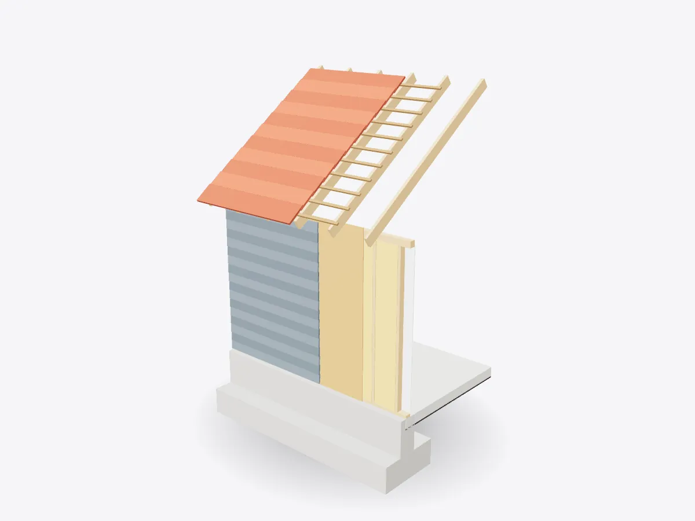

01 / 05
Overview
9 parts, one idea.
Explore a timber-frame house wall and roof in 3D: foundation, slab, studs, insulation, sheathing, cladding, rafters, tiles and drywall, layer by layer.
Drag to orbit, pinch or scroll to zoom, tap any part.
How it works · Buildings
A wall looks solid, but it's a carefully ordered sandwich. Each layer has one job: carry load, stop water, hold heat or look good.

Scores are saved on this device only.
01 / 05
Overview
Explore a timber-frame house wall and roof in 3D: foundation, slab, studs, insulation, sheathing, cladding, rafters, tiles and drywall, layer by layer.
Drag to orbit, pinch or scroll to zoom, tap any part.
02 / 05
Explode
Keep scrolling and every part slides away from the centre, so you can see how they fit together.
03 / 05
Slice
A section plane sweeps through the model as you scroll. Pick an axis and set the depth yourself.
04 / 05
Parts
Pick a part or tap a glowing dot. It lights up and everything else fades back.
05 / 05
Facts
Roof, walls and floors all hand their weight down through rafters and studs into the foundation.
Cladding, membranes and tiles overlap so gravity carries rain away.
Footings sit below the depth where the ground freezes, so frost can't lift them.
Explained
The walls of a timber-frame house look like one solid thing, but they're a carefully ordered stack of layers. Each layer has a single main job: carrying weight, keeping out water, holding in heat, or giving a finished surface. Slice the model and you can follow those layers from the inside of the room to the weather outside: drywall, studs with insulation between them, sheathing, a membrane and finally the cladding.
The structure is the timber frame. Vertical studs stand between a bottom plate and a doubled top plate, and they carry the loads from the roof and any upper floors down to the foundation. Fixing sheathing panels of OSB or plywood across the outside turns the frame into a stiff box that resists being pushed sideways by the wind. Between the studs, insulation batts trap still air, which is a poor conductor of heat, so less heat escapes in winter and less gets in during summer.
Outside the sheathing, a breathable membrane stops liquid water while letting water vapour escape, so the timber stays dry. The cladding goes over the top. Each board laps over the one below, so rain runs down the face of the wall and drips off the bottom instead of being driven in. The roof works on the same idea: tiles hang on horizontal battens and overlap downhill like fish scales, with another membrane underneath to catch anything blown past them. Water is always encouraged to flow down and out, never in.
The roof structure is a series of sloping rafters running from the top of the wall to the ridge. Each one carries a strip of tiles, plus snow and wind, and passes that load into the wall at a notch called a birdsmouth. From there the load travels down the studs to the bottom plate, through the concrete slab edge and into the foundation. The footing at the bottom is wider than the wall so that the weight is spread over a larger area of soil. In cold climates it's set below the frost line, the depth to which the ground freezes in winter, so that ice forming in the soil can't push it upwards. Follow that chain of parts and you've traced the load path, the most important idea in building design.
D3DDD
D3DDD makes them: product cutaways, exploded views, architectural renders and technical drawings.